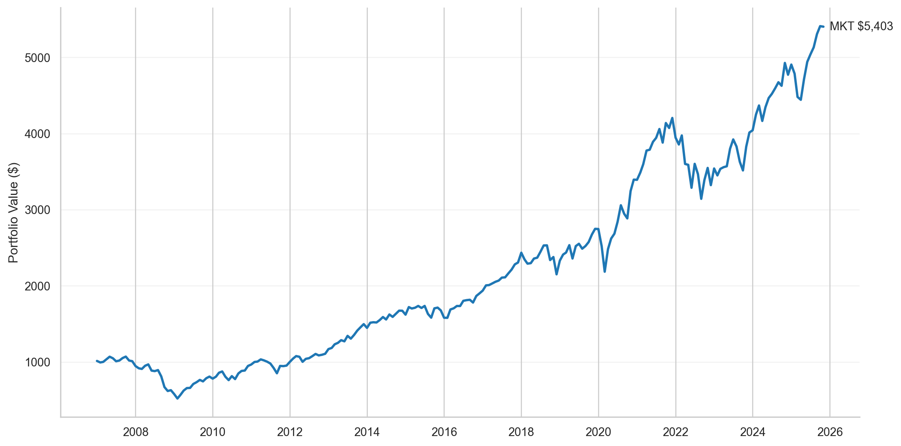
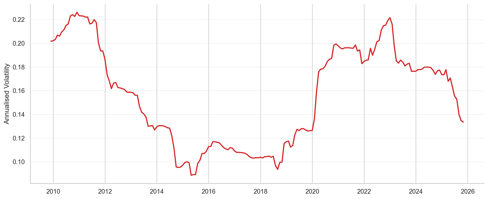
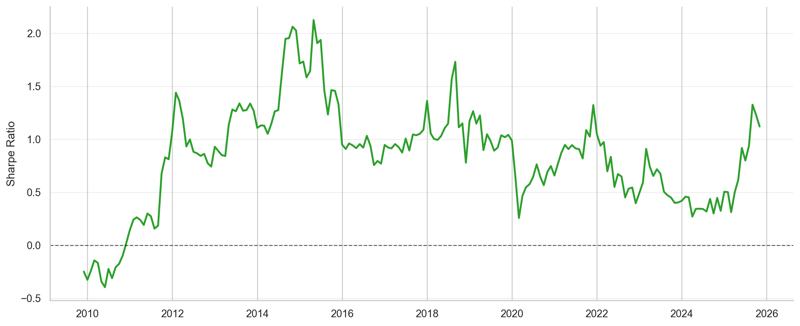
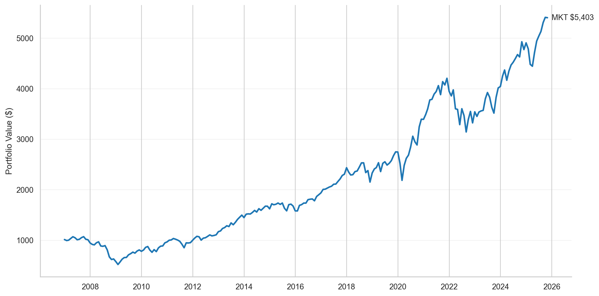
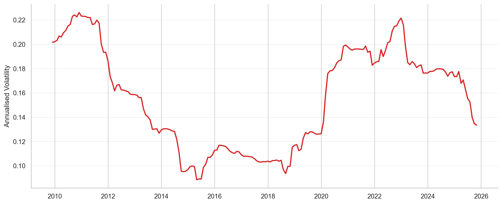
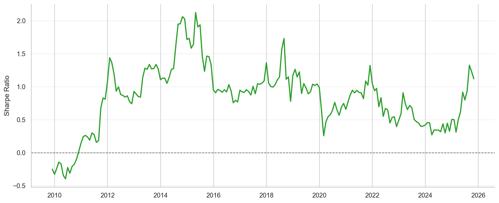

| Factor | Final Value ($) | CAGR (%) | Volatility (%) | Sharpe | Max Drawdown (%) |
|---|---|---|---|---|---|
| Market (Rm − Rf) | 5,403 | 9.33 | 15.94 | 0.64 | -51.42 |
Market factor performance, cumulative returns, and rolling risk diagnostics (36-month window).



Factor-Informed Asset Allocation Under Model Uncertainty
Traditional mean–variance portfolio optimisation is highly sensitive to expected return estimates and often produces unstable allocations in the presence of estimation error. This project addresses these limitations by integrating systematic factor information within the Black–Litterman (BL) framework, allowing investor views to be incorporated in a disciplined Bayesian manner.
The objectives of this study are: - to construct a diversified, factor-bearing portfolio, - to analyse factor behaviour independently prior to optimisation, - to apply the Black–Litterman model with absolute and relative views, - to compute optimal allocations under multiple risk preferences, - and to evaluate portfolio performance and factor attribution via systematic backtesting.
The portfolio universe is chosen to reflect broad economic diversification across multiple asset classes, including equities, fixed income, credit, commodities, and real estate.
This study incorporates multiple systematic factors treated as synthetic investable return streams: - Market excess return (MKT–RF) - Size (SMB) - Value (HML) - Profitability (RMW) - Investment (CMA) - Momentum (MOM)
Each factor represents a distinct and economically motivated source of systematic risk.
The market excess return (Rm − Rf) is treated as the baseline systematic factor against which all other factor returns are evaluated. It represents the compensation investors receive for bearing aggregate market risk.
Before analysing style and custom factors, we first examine the standalone behaviour of the market factor over the sample period. This includes cumulative performance, volatility, risk-adjusted returns, and drawdowns. Establishing this baseline is essential for interpreting subsequent factor performance and time-varying exposures.
| Factor | Final Value ($) | CAGR (%) | Volatility (%) | Sharpe | Max Drawdown (%) |
|---|---|---|---|---|---|
| Market (Rm − Rf) | 5,403 | 9.33 | 15.94 | 0.64 | -51.42 |
Market factor performance, cumulative returns, and rolling risk diagnostics (36-month window).



| Factor | Final Value ($) | CAGR (%) | Volatility (%) | Sharpe | Max Drawdown (%) |
|---|---|---|---|---|---|
| Size (SMB) | 5,403 | 9.33 | 15.94 | 0.64 | -51.42 |
Brief paragraph explaining: why factors are used why they are treated as investable return streams Bullet list of factors you will study: Market (MKT–RF) Size (SMB) Value (HML) Profitability (RMW) Investment (CMA) Momentum (custom factor) Then one sentence per factor, max: HML captures the historical excess returns of high book-to-market firms relative to growth firms. SMB proxies the size premium associated with small capitalisation stocks. RMW reflects profitability persistence. CMA reflects investment discipline. Momentum captures short- to medium-term trend persistence.
For each factor category, explain exactly one level deeper than obvious. For Fama–French factors State explicitly: Source: Ken French Data Library Frequency: Daily Returns: excess returns where applicable Sample window: same as asset universe This signals methodological consistency. For your custom factor (Momentum / Tech basket) This is where you earn points. Explain clearly: Universe used (e.g. top 5 tech stocks) Portfolio construction rule: equal-weighted long-only or long-short Rebalancing frequency How returns are computed Example wording: “A simple momentum factor is constructed as an equal-weighted portfolio of the top five technology stocks by market capitalisation. Daily returns are computed and treated as a synthetic factor return series.”
For each factor: One cumulative return plot Overlaid with the market (SPY or MKT–RF) What the examiner is looking for: Directionality Volatility Drawdowns Whether the factor is “alive” or dead in your sample Interpretation paragraph (mandatory): Does it outperform? Is it volatile? Is it regime-dependent? Short, factual, no hype.
Here you present: Rolling beta of factor vs market Same rolling window for all factors (e.g. 126 or 252 days) Why this matters: Shows factors are not static Shows correlation structure evolves Justifies BL later Interpretation focus: Is beta stable? Does it flip? Does it cluster around zero (good factor)? This is where your work becomes systematic, not descriptive.
This is often missing in weak submissions — include it. Rolling regression: Factor return ~ Market return Plot rolling alpha Explain: Is alpha persistent? Is it episodic? Does it decay? This shows you understand that factors are not free lunches.
Here you can: Show: equal-weighted combination of factors cumulative return rolling beta vs market This accomplishes two things: Shows diversification across factors Sets the stage for portfolio optimisation later Do not optimise yet. Just observe.
Prior to portfolio optimisation, factors are analysed independently to assess their standalone behaviour and relationship to the market.
Equilibrium expected returns are derived using the standard Black–Litterman formulation:
[ = w_{mkt} ]
where () denotes risk aversion, () the covariance matrix, and (w_{mkt}) the market portfolio.
A limited number of absolute and relative views are imposed to preserve interpretability, with uncertainty encoded via the () matrix.
Portfolio allocations are computed using posterior expected returns under multiple optimisation frameworks.
Optimised portfolios are evaluated via systematic backtesting.
Results are analysed with respect to robustness, diversification, and sensitivity to investor views.
This study demonstrates how combining factor analysis with the Black–Litterman framework improves portfolio stability, interpretability, and economic coherence.